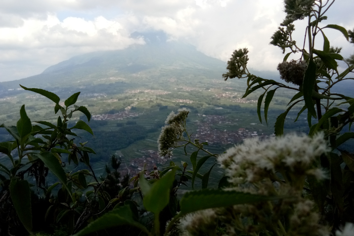
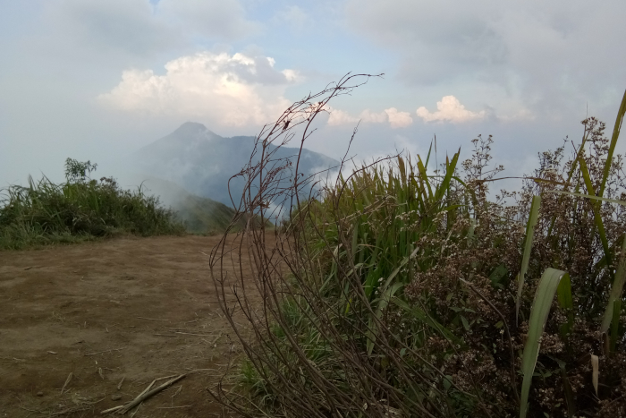

FIND ME ON :


Kamu pasti tahu Gunung Andong. Gunung yang secara administratif masuk wilayah Salatiga dan Magelang ini memang sangat diminati oleh para pendaki. Alasannya, untuk mendaki gunung setinggi 1.726 mdpl ini kamu tak perlu menghabiskan banyak waktu. Pendakiannya, dari base camp sampai ke puncak, hanya memakan waktu satu sampai dua jam saja.
Waktu tempuh yang sebentar itu dan pemandangan luar biasa yang bisa dilihat dari puncak bikin Gunung Andong cocok sekali untuk pemula. Lumayan sekali untuk sejenak menghilangkan penat akibat terlalu lama berada dalam hiruk pikuk kota.
Entah kenapa, saya sangat cinta dengan gunung ini. Gunung Andong adalah gunung yang paling sering saya datangi, meskipun terkadang hanya menginap saja di Base Camp Pendem dan jalan-jalan di kaki gunung.
Hanya bisa berencana
Salah satu cerita yang saya ingat adalah perjalanan kedua kali saya ke Gunung Andong. Kali itu saya berangkat hanya berdua saja dengan si doi. Berangkat dari Semarang sekitar jam 23.00 WIB, sepanjang perjalanan kami diguyur hujan. Cuaca saat itu memang sedang tak bersahabat.
Sampailah kami di base camp jam 01.00 WIB dini hari, setelah sempat nyasar karena lupa jalan ke sana. Di depan Base Camp Pendem, kami benar-benar bingung, soalnya base camp sepi, tidak ada pendaki sama sekali. Suasananya berbanding terbalik dengan saat kami ke tempat ini setahun yang lalu. Namun, karena sudah lelah dan kedinginan, suasana sepi itu tak kami hiraukan. Kami langsung tidur di pendopo base camp.
Jam 04.00 WIB pagi, kami dibangunkan oleh ibu pemilik base camp. Tak lama, teh hangat dan camilan tersaji. Kami pun ngobrol-ngobrol dengan sang ibu—yang pada akhirnya kami panggil Umi. Karena keramahannya, sebentar saja bagi Umi sampai kami dianggap seperti anak sendiri. Senangnya.
Semula, kami hendak mendaki Gunung Andong sehabis Subuh supaya bisa melihat sunrise. Tapi, Tuhan berkehendak lain. Si doi agak tidak enak badan. Apa boleh buat, akhirnya kami urungkan niat mendaki untuk menikmati matahari terbit. Umi memberi masukan agar kami mendaki siang saja saat badan sudah kembali prima.
Siangnya, setelah melakukan persiapan—termasuk makan—kami pun memulai pendakian. Kami naik lewat utara dan turun lewat selatan. Pendakian kali itu perlu waktu 1,5 jam. Kami memang termasuk pejalan santai, enggan terburu-buru, dan lebih suka menikmati perjalanan itu sendiri.
Perasaan yang bercampur aduk
Ini adalah pendakian pertama setelah kecelakaan yang hampir merenggut nyawa dan mencederai tulang punggung saya. Sebenarnya saya belum boleh nanjak. Tapi, karena sudah rindu sekali dengan gunung, saya membujuk si doi untuk menemani saya.
Makanya setiba di puncak saya sangat bersyukur sebab masih diberi kesempatan untuk menikmati keindahan alam dan keagungan Tuhan. Dari titik tertinggi Gunung Andong, kamu bisa melihat Gunung Merbabu, Merapi, Sindoro, Sumbing, Telomoyo, dan Ungaran jika hari cerah.
Hanya sebentar kami di puncak. Selepas foto-foto dan menyaksikan keindahan alam, kami turun. Sepanjang jalan turun, kami sering berpapasan dengan pendaki-pendaki lain. Tegur sapa terjadi. Inilah ciri khas mendaki gunung di Indonesia.
Tapi, barangkali karena yang mendaki Gunung Andong banyak sekali, dan banyak juga yang belum sadar akan kewajiban menjaga kelestarian alam, banyak sampah berserakan yang kami temukan sepanjang jalur pendakian. Andai saja kami membawa kresek lebih—bukan cuma satu—atau trash bag pastilah kami akan bisa memungut lebih banyak sampah. Pasti gunung akan jadi lebih asri seandainya makin banyak pendaki yang membawa sampahnya turun.
Sebentar saja, kami sudah kembali ada di base camp. Perasaan saya campur aduk, antara senang bisa ke Gunung Andong lagi dan kecewa karena sampah-sampah yang mengotori jalur. Di tempat Umi, kami melepas penat dahulu—tiga hari—sebelum kembali ke kota. Makanan yang enak tapi murah itu memang bikin betah.
 Papandayan dan Pelajaran untuk Lebih Bijak Memilih Teman Pendakian
Papandayan dan Pelajaran untuk Lebih Bijak Memilih Teman Pendakian
 Gagal ke Puncak Lawu, Pulang Membawa Banyak “Cerita”
Gagal ke Puncak Lawu, Pulang Membawa Banyak “Cerita”
 Inilah 7 Tumbuhan yang Bisa Dimakan di Gunung dan Hutan
Inilah 7 Tumbuhan yang Bisa Dimakan di Gunung dan Hutan